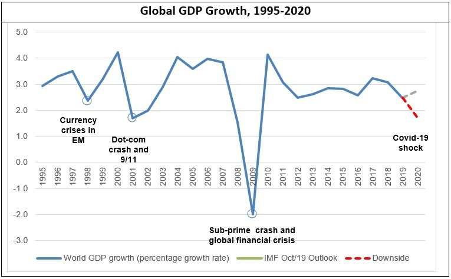

Crise des subprimes
La crise des subprimes est l’une des plus graves crises financières de l’histoire récente. Partie des États-Unis, elle s’est rapidement transformée en une crise économique mondiale, provoquant la faillite de nombreuses institutions financières, un effondrement des marchés boursiers, et une récession globale.
Description de la crise
La crise des subprimes débute en 2007, lorsqu’une bulle immobilière éclate aux États-Unis. Cette bulle avait été alimentée par des prêts hypothécaires risqués (appelés subprimes) accordés à des emprunteurs peu solvables. Lorsque ces emprunteurs ne parviennent plus à rembourser leurs crédits, le marché immobilier s’effondre, entraînant avec lui le système financier international. La situation atteint son apogée en septembre 2008, avec la faillite de Lehman Brothers, une des plus grandes banques d’investissement du monde. Cet événement déclenche une crise de confiance massive dans les marchés financiers.
Contexte
La crise des subprimes prend racine dans le contexte de forte croissance économique et de dérégulation financière qui précède :
- Années 1990 et 2000 : Une période de faible inflation et de taux d’intérêt bas favorise une expansion massive des crédits, notamment dans le secteur immobilier.
- Dérégulation financière : Le relâchement des contrôles sur les banques permet l’émergence de produits financiers complexes, comme les titres adossés à des créances hypothécaires (MBS) et les obligations de dettes collatéralisées (CDO).
- Bulle immobilière : Le crédit facile et la spéculation provoquent une augmentation rapide des prix de l’immobilier aux États-Unis, incitant les banques à prêter même à des ménages à hauts risques (prêts subprimes).
- Surconfiance dans le système financier : Les agences de notation attribuent des notes élevées à des produits financiers risqués, encourageant les investisseurs à prendre davantage de risques.
Les raisons de la crise
La crise des subprimes est le résultat d’un enchaînement de facteurs structurels et comportementaux :
- Prêts risqués (subprimes) : Les banques accordent des crédits hypothécaires à des ménages à faibles revenus, souvent sans exiger de garanties suffisantes.
- Titres complexes : Les prêts hypothécaires sont regroupés dans des produits financiers complexes (MBS et CDO), puis vendus aux investisseurs du monde entier. Ces produits masquent les risques réels.
- Spéculation et bulle immobilière : Les prix de l’immobilier montent artificiellement, créant une bulle spéculative.
- Taux d’intérêt variables : Lorsque les taux d’intérêt augmentent, de nombreux ménages ne peuvent plus rembourser leurs prêts, provoquant des défauts massifs.
- Effondrement en chaîne : Les défauts de paiement entraînent la baisse des prix de l’immobilier, la dévalorisation des produits financiers liés, et la faillite des institutions surexposées.
Conséquences
La crise des subprimes a des répercussions économiques et sociales majeures, aux États-Unis et dans le monde entier.
Aux États-Unis :
- Faillites bancaires : Plusieurs institutions financières majeures, comme Lehman Brothers et Washington Mutual, font faillite. D’autres, comme AIG et Citigroup, doivent être sauvées par des fonds publics.
- Effondrement du marché immobilier : Les prix de l’immobilier chutent, laissant des millions de propriétaires avec des dettes supérieures à la valeur de leurs biens.
- Récession économique : Le PIB américain recule, et des millions d’emplois sont supprimés.
- Chômage : Le taux de chômage atteint environ 10 % en 2009.
- Propagation de la crise : Les banques et investisseurs étrangers, exposés aux produits financiers américains, subissent des pertes massives.
- Récession mondiale : Les échanges commerciaux et les investissements chutent, entraînant une baisse de la croissance mondiale. 
- Confiance ébranlée : La crise provoque une perte de confiance durable dans les institutions financières et les marchés boursiers.
À l’échelle mondiale :
Remédiations et leçons tirées
La crise des subprimes met en lumière les dangers de la spéculation excessive et de la dérégulation financière. En réponse, plusieurs mesures et réformes sont mises en place pour stabiliser l’économie mondiale et éviter une répétition :
Interventions publiques :
- Les États-Unis lancent des plans de sauvetage, comme le TARP (Troubled Asset Relief Program), pour injecter des centaines de milliards de dollars dans les banques en difficulté.
- Les banques centrales, comme la Réserve fédérale américaine (Fed) et la Banque centrale européenne (BCE), baissent drastiquement les taux d’intérêt et mettent en place des politiques de quantitative easing (assouplissement quantitatif) pour soutenir l’économie.
- Adoption de la loi Dodd-Frank en 2010 aux États-Unis, imposant des règles plus strictes sur les banques et les marchés financiers.
- Création du Conseil de stabilité financière (FSB) pour coordonner la régulation à l’échelle mondiale.
- Renforcement des exigences en matière de fonds propres pour les banques (accords de Bâle III).
- Mise en place d’une supervision plus rigoureuse des agences de notation et des produits financiers complexes.
Réglementations renforcées :
Surveillance accrue :
Résumé final
La crise des subprimes est née de pratiques financières risquées et d’une régulation insuffisante dans un contexte de bulle immobilière. Elle a provoqué une récession mondiale et a mis en évidence la nécessité de renforcer la régulation des marchés financiers et de surveiller les risques systémiques. Les leçons tirées de cette crise ont conduit à des réformes majeures pour restaurer la confiance et prévenir de futures crises financières.